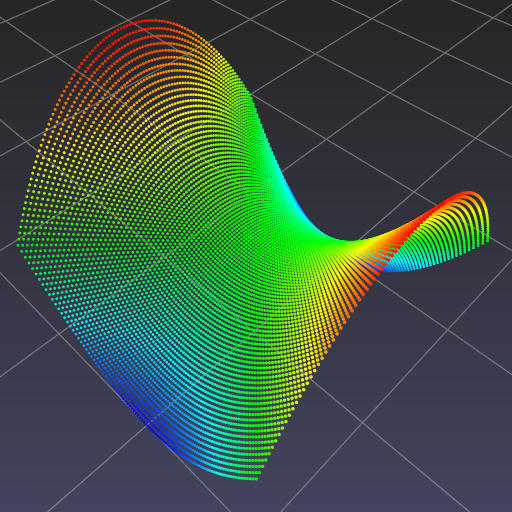

Hyperbolic paraboloid¶
Given hyperbolic paraboloid
define corresponding Python function f()
>>> def f(x, y):
return x ** 2 - y ** 2
Evaluate f() on 100 x 100 uniformly spaced samples in [-1, 1] x [-1, 1].
>>> import numpy as np
>>> t = np.linspace(-1.0, 1.0, 100)
>>> x, y = np.meshgrid(t, t)
>>> z = f(x, y)
Concatenate x, y and z into a single array of points.
>>> P = np.stack([x, y, z], axis=-1).reshape(-1, 3)
Visualize.
>>> import pptk
>>> v = pptk.viewer(P)
>>> v.attributes(P[:, 2]) # color points by their z-coordinates
>>> v.set(point_size=0.005)
One can also calculate and visualize additional per-point attributes.
>>> # calculate gradients
>>> dPdx = np.stack([np.gradient(x, axis=1), np.gradient(y, axis=1), np.gradient(z, axis=1)], axis=-1)
>>> dPdy = np.stack([np.gradient(x, axis=0), np.gradient(y, axis=0), np.gradient(z, axis=0)], axis=-1)
>>> # calculate gradient magnitudes
>>> mag = np.sqrt(np.sum(dPdx ** 2 + dPdy ** 2, axis=-1)).flatten()
>>> # calculate normal vectors
>>> N = np.cross(dPdx, dPdy, axis=-1)
>>> N /= np.sqrt(np.sum(N ** 2, axis=-1))[:, :, None]
>>> N = N.reshape(-1, 3)
>>> # set per-point attributes
>>> v.attributes(P[:, 2], mag, 0.5 * (N + 1))
Toggle between attributes using the [ and ] keys.
|  |  |
 |
{kind=link}
| Visualization of . Points are colored by (left), (middle), and normal directions (right) |